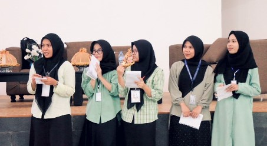
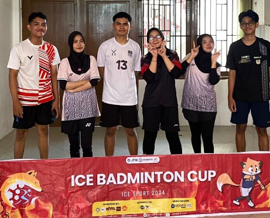

Sekolah Asal SMK Telkom Makassar
Universitas Negeri Makassar
We don't care the process, The end goal is the matter.
Selama berkuliah, saya aktif mengikuti berbagai kegiatan berharga, seperti kompetisi Smart Car 4WD,
di mana saya terlibat dalam pengembangan hardware dan belajar untuk bertanggung jawab di setiap
tahap proses. Pengalaman ini juga meningkatkan kemampuan saya dalam berkomunikasi dan bekerja sama
dalam tim, yang sangat penting untuk pengembangan soft skill.
Selain itu, pengalaman yang saya jalani telah melatih kemampuan berpikir kritis saya. Kegiatan lain,
seperti Spirit yang diselenggarakan oleh Himatik FT UNM dan Ice Sport, memberi saya kesempatan untuk bersosialisasi
dan menikmati waktu luang sambil tetap belajar. Semua pengalaman ini berkontribusi signifikan terhadap perkembangan
diri saya selama masa perkuliahan.
Daftar Mata Kuliah:
1. Pengantar Teknik Komputer
2. Algoritma Pemrograman Dasar
3. Matematika Diskrit
Daftar Dosen:
Foto Kegiatan:
 | No | Nama | Jenis Kelamin | Alamat | Asal Sekolah | |
|---|---|---|---|---|---|
| Panggilan | Lengkap | ||||
| 1 | Niar | Andi Mahdaniar Patoppoi. Z | Perempuan | Kasomberang Permai | SMAN 9 Jeneponto |
| 2 | Sayla | Sayla Fardhillah | Perempuan | Jl. Malengkeri | SMKN 1 Barru |
| 3 | Sadva | Sadva Anargya | Laki-Laki | Jl. Cokonuri 1A | SMA Kartika XX-I Makassar |
| 4 | Aidil | Muhammad Aidil Berkah Juliah | Laki-Laki | Jl. Dg. Ngeppe | SMAN 8 Makassar |